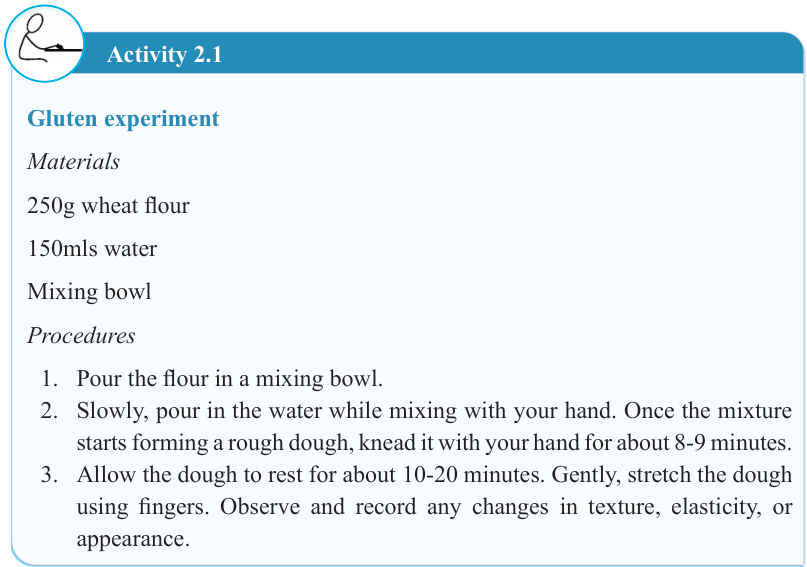

19


Food and Human Nutrition

Form Two

Activity 2.1
Gluten experiment
Materials
250g wheat flour
150mls water
Mixing bowl
Procedures
1. Pour the flour in a mixing bowl.
2. Slowly, pour in the water while mixing with your hand. Once the mixture starts forming a rough dough, knead it with your hand for about 8-9 minutes.
3. Allow the dough to rest for about 10-20 minutes. Gently, stretch the dough using fingers. Observe and record any changes in texture, elasticity, or appearance.
Rice
Rice is a cylindrical grain obtained through milling of paddy. It is particularly rich in starch on the endosperm. Compared to other cereal grains, rice contains the lowest levels of dietary fibre and protein. It provides a moderate amount of fat and B vitamins such as vitamin B1 (Thiamine), and vitamin B3 (Niacin). Essential minerals like magnesium and phosphorous are primarily located in the outer layers of the grain. The germ is rich in protein, lipids, and vitamins including vitamin E and several B vitamins.
Rice is mainly categorised based on the processing method, with the main categories being polished and unpolished rice.
Polished rice: This type of rice is highly milled to remove the outer layers such as husk and bran, resulting in a smooth, white grain. This process removes most of the nutrients like protein, minerals, vitamins and fat that are concentrated in the outer layers thus making polished rice less nutritious than unpolished (brown) rice.
However, it is preferred by many due to its appealing taste, soft texture and ease of digestion. Parboiled rice is a type of polished rice that is partially cooked with its husk to prevent nutrient loss from the grains. This is done by soaking the paddy in cold water for a day and then steaming, drying and milling it. Soaking enables
17/09/2025 16:30